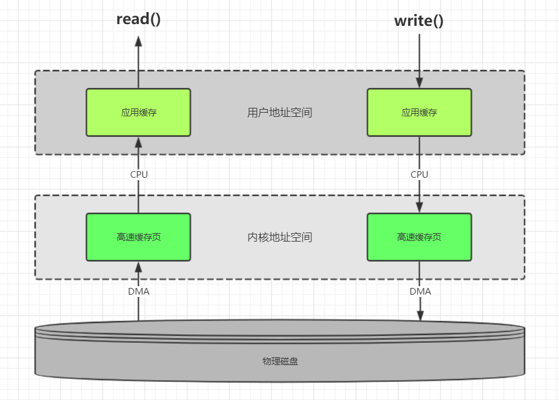
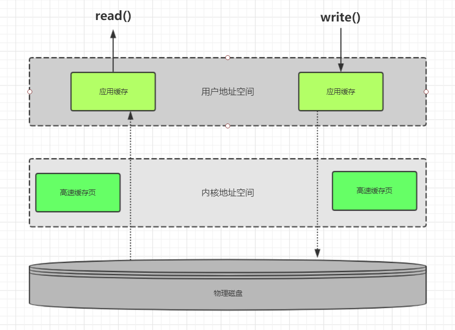

PIO与DMA
在介绍 I/O 模型之前，有必要简单地说说慢速 I/O 设备和内存之间的数据传输方式。
- PIO的英文拼写是“Programming Input/Output Model”，PIO模式是一种通过CPU执行I/O端口指令来进行数据的读写的数据交换模式。是最早先的硬盘数据传输模式，数据传输速率低下，CPU占有率也很高，大量传输数据时会因为占用过多的CPU资源而导致系统停顿，无法进行其它的操作。
- DMA的英文拼写是“Direct Memory Access”，汉语的意思就是直接内存访问，是一种不经过CPU而直接从内存了存取数据的数据交换模式。PIO模式下硬盘和内存之间的数据传输是由CPU来控制的；而在DMA模式下，CPU只须向DMA控制器下达指令，让DMA控制器来处理数的传送，数据传送完毕再把信息反馈给CPU，这样就很大程度上减轻了CPU资源占有率。
缓存IO和直接IO
1 | 缓存IO：数据从磁盘先通过DMA模式拷贝到内核空间高速缓存页,再从高速缓存页通过cpu拷贝到用户空间应用缓存 |
缓存I/O
1 | 缓存I/O被称作为标准I/O，大多数文件系统的默认I/O操作都是缓存I/O |

- 读操作：
1 | 操作系统检查内核空间的高速缓存页是否命中，命中直接返回；否则从物理磁盘中读取，然后load到内核缓存中 |
- 写操作：
进程调用SystemCall函数将用户空间应用缓存数据通过DMA的方式拷贝到内核空间高速页缓存
1 | update系统守护进程会周期性地(一般每隔30秒)调用sync函数，定期冲洗内核块缓冲区数据写入磁盘。 |
- 缓存I/O的优点：
1 | 分离了内核空间和用户空间，保护系统本身的运行安全，避免应用程序异常导致系统崩溃 |
- 缓存I/O的缺点：
1 | 数据传输过程中需要在应用程序地址空间（用户空间）和缓存（内核空间）之间进行多次数据拷贝操作，这些拷贝操作会给CPU以及内存带来一定的开销 |
直接I/O
1 | 直接IO就是应用程序直接访问磁盘数据，而不经过内核缓冲区，也就是绕过内核缓冲区,自己管理I/O缓存区，这样做的目 |

- 引入内核缓冲区的目的在于提高磁盘文件的访问性能，因为当进程需要读取磁盘文件时，如果文件内容已经在内核缓冲区中，那么就不需要再次访问磁盘；而当进程需要向文件中写入数据时，实际上只是写到了内核缓冲区便告诉进程已经写成功，而真正写入磁盘是通过一定的策略进行延迟的。然而，对于一些较复杂的应用，比如数据库服务器，它们为了充分提高性能，希望绕过内核缓冲区，由自己在用户态空间实现并管理I/O缓冲区，包括缓存机制和写延迟机制等，以支持独特的查询机制，比如数据库可以根据更加合理的策略来提高查询缓存命中率。另一方面，绕过内核缓冲区也可以减少系统内存的开销，因为内核缓冲区本身就在使用系统内存。
- 应用程序直接访问磁盘数据，不经过操作系统内核数据缓冲区，这样做的目的是减少一次从内核缓冲区到用户程序缓存的数据复制。这种方式通常是在对数据的缓存管理由应用程序实现的数据库管理系统中。
直接I/O的缺点就是如果访问的数据不在应用程序缓存中，那么每次数据都会直接从磁盘进行加载，这种直接加载会非常缓慢。通常直接I/O跟异步I/O结合使用会得到较好的性能。